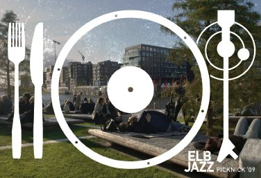

Das Hamburger Festival Projekt ELBJAZZ veranstaltet in Kooperation mit der HafenCity Hamburg GmbH am Sonntag, den 23. August, von 15:00-22:00 Uhr ein Jazz-Picknick auf den [qype id=“69135″]. Es gibt Live-Musik, Lieblingslieder vom Plattenteller, ein Flying Picknick der anliegenden Gastronomien und bei Dämmerung spannende Kurzfilme.
Als Liveacts treten auf:
Ballroom Buskers (Swing und Tanzperformance)
Roland Cabezas Trio (Latin)
B?Three (Goove-Jazz )
Jonatha Brooke (Singer-Songwriter)
Unter dem Motto ?Lieblingslieder? kommen außerdem die Jazz-Favoriten bekannter Hamburger Persönlichkeiten auf die Plattenteller.
Zum Sundowner ab etwa 20:30 Uhr nehmen die Guerilla-Filmer ?A Wall Is A Screen? die Marco-Polo-Terrassen ein und machen die Mauern zu Leinwänden. Gezeigt werden Kurzfilme von der Elbe, dem Hafen und vom Jazz.
Die gesamte Veranstaltung ist kostenlos – alle Besucher sind herzlich eingeladen, ihre Picknickkörbe, Decken und Stühle mitzubringen und so ihr eigenes „Jazz-Picknick“ zu gestalten. Die anliegenden Gastronomen bieten zusätzlich ein spezielles „Flying-Picknick“, bei dem sie die Gäste direkt vor Ort mit kleinen Snacks versorgen.